Wave 5 local review. Before is on the left; after is on the right. The homepage and shared navigation retain their Wave 4 design.
How It WorksCareer EvidenceGet StartedImplementation report & launch handoff
Before full sizeAfter full sizeCombined comparison
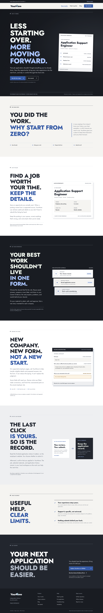
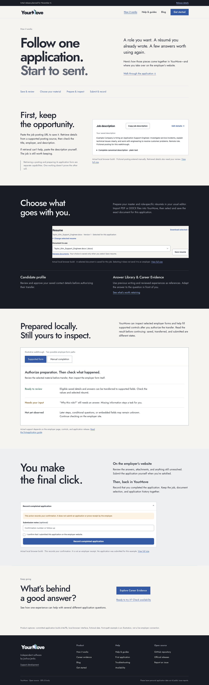
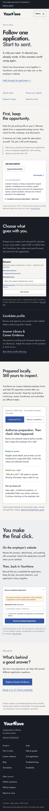
Other verified widths: 320px768px1024px
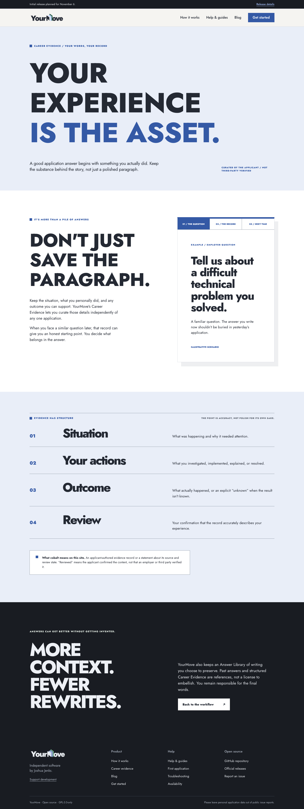
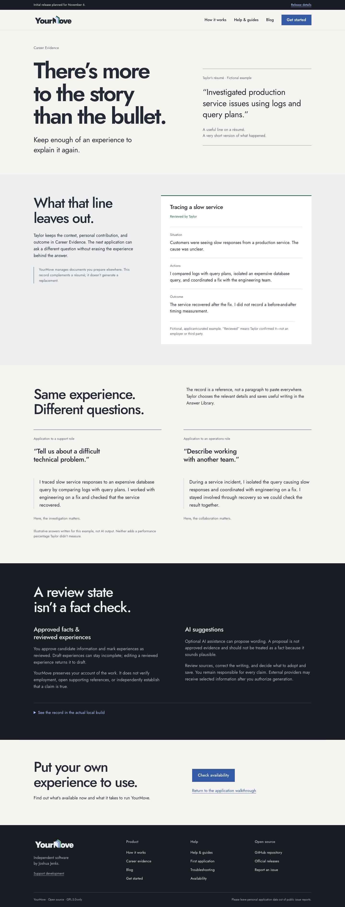
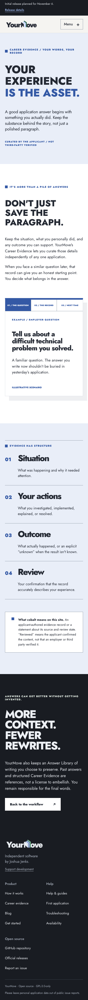
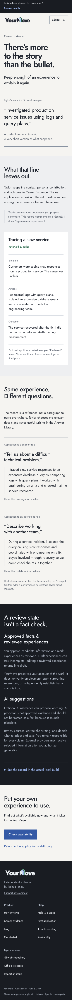
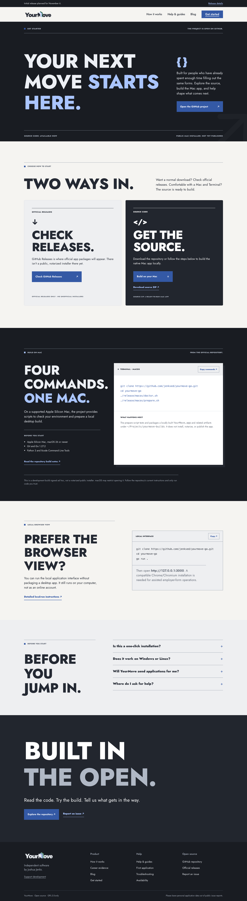
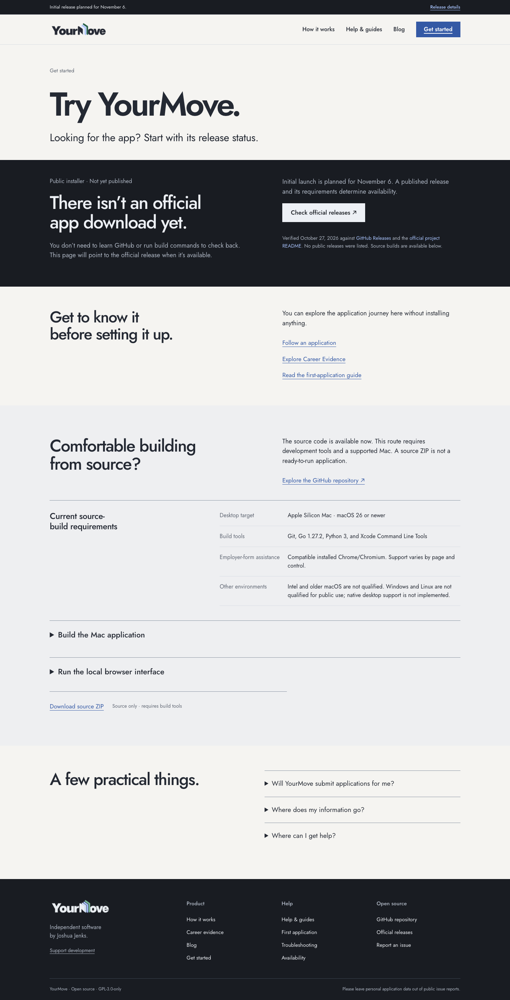
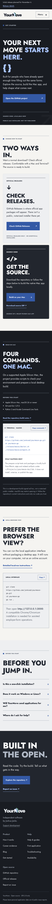
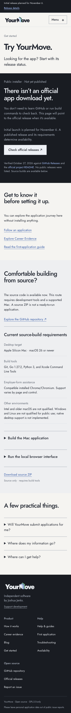
Manual path · desktop detailManual path · mobile pageBrowser verificationLegacy & mocked analytics results
QA fixture only. These screenshots demonstrate configuration behavior using a deliberately fictional v0.0.0-qa asset. This is not a published YourMove release and the asset was never requested.
Qualified-release layout · desktopQualified-release layout · mobile